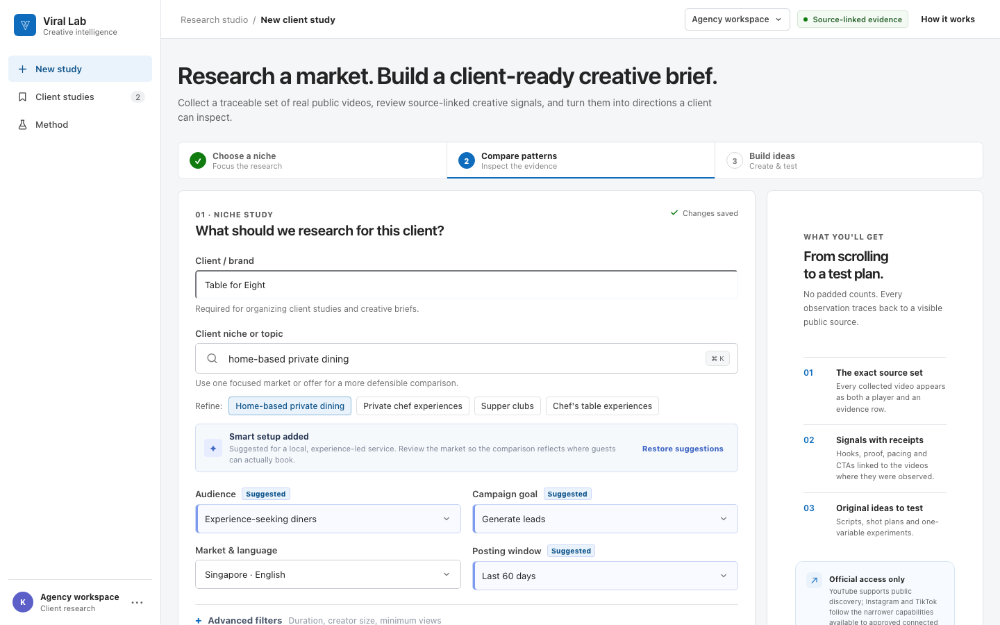
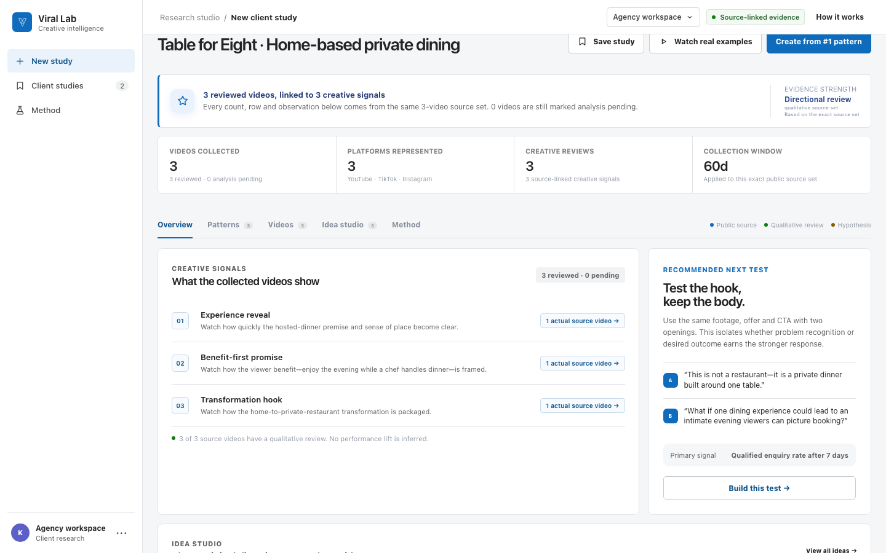
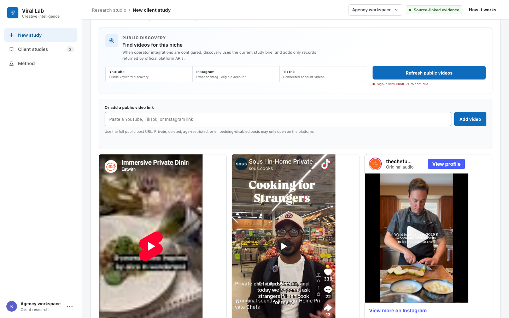

Home Case studies Viral Lab
Product build · Private beta
Evidence-backed short-form ideas, built from the videos behind them
Viral Lab turns a focused niche into a traceable source set, finds creative patterns that repeat, and develops original scripts and tests with the evidence attached. Every count, signal and idea maps back to a video the user can inspect.



At a glance
-
1:1
evidence mapping
Every signal points back to a visible source video
-
0
padded sample rows
The product reports only the videos actually collected
-
Evidence stays qualified
- Public metric
- Qualitative review
- Hypothesis to test
- Status
- Private beta
- For
- Agencies and in-house marketers
- Scope
- Product strategy, UX and full-stack build
- Stack
- Cloudflare Workers, D1 and TypeScript
The problem
Most viral-content advice starts with a handful of impressive posts and ends with a list of confident-sounding patterns. The examples, the reasoning and the proposed idea are often separated, which makes it hard to tell whether the recommendation is grounded in the source material or merely plausible.
Viral Lab was designed around a stricter question: can a marketer move from a niche to a testable creative direction without losing the evidence chain?
The workflow
From a market question to an idea worth testing
The same source set flows through the whole study. If a video is added or removed, the totals, evidence rows, signals and supporting references change with it.
-
1. Define the niche
Start with the audience, campaign goal, market and collection window. Smart suggestions are labelled so the user can review them.
-
2. Build the source set
Collect public records through supported official routes, or add a public YouTube, TikTok or Instagram link directly.
-
3. Review the evidence
Inspect the videos, separate public metrics from qualitative observations, and see exactly which source supports each signal.
-
4. Create a test
Turn a repeated creative mechanism into an original hook, script direction and one-variable experiment, not a copied post.
The evidence model
A claim is only as useful as its receipt
Viral Lab treats traceability as product behaviour, not a disclaimer. The interface makes the exact source set visible and preserves uncertainty where the platforms do not return a metric.
-
Counts come from records
Four collected videos means four cards, four evidence rows and a total of four. The interface never fills a target sample with examples that are not present.
-
Missing stays missing
If an official source does not return a view count or another public metric, the product says so instead of estimating it.
-
Review is not performance
Qualitative observations describe what appears in a video. They do not imply that a hook caused reach, retention or conversions.
-
Ideas remain original
The output borrows a testable mechanism, such as a transformation or benefit-first opening, then writes a new concept for the user's offer.
Official platform boundaries
The product says what each route can actually do
“Scan the platforms” is not one universal capability. Each network exposes a different official route, so Viral Lab scopes discovery to the access that is genuinely available.
| Platform | Official route | Product boundary |
|---|---|---|
| YouTube | Public keyword discovery through the YouTube Data API when the app-level integration is configured. | Returned videos are labelled short-form candidates; the API result is not presented as a guaranteed Shorts ranking. |
| Exact hashtag discovery after an eligible professional account connection and the required approval. | The product does not imply broad semantic search across all public Reels. | |
| TikTok | An authorised account's own public videos through the standard connected-account flow. | The commercial product does not claim unrestricted, platform-wide organic search. |
| Any supported link | A user can add the full public URL for a YouTube, TikTok or Instagram post. | Private, deleted, age-restricted or embedding-disabled posts may only open on the original platform. |
What is live in the beta
The current build includes an authenticated study workflow, niche-based setup suggestions, source-linked evidence cards, qualitative creative review, test directions and CSV export from the exact source set. YouTube discovery runs through an authenticated server endpoint when the application's API key is configured.
Instagram and TikTok discovery remain behind their eligible connection and approval requirements. Until those routes are available for an account, the interface keeps the boundary visible and supports direct public links instead of simulating search results.
This is a product-build case study, not a campaign-results case study. Viral Lab is still in private beta, so no reach, retention or conversion uplift is claimed here.
Bring a niche. Inspect every source.
Viral Lab accounts are being created manually during the private beta while the evidence model and official platform connections are validated.